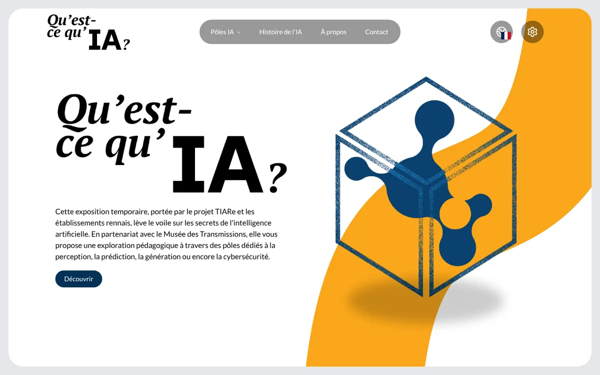

ExpoIA, l'exposition sur l'IA du Musée des Transmissions
Le site bilingue et accessible de l'exposition sur l'IA du Musée des Transmissions, à Rennes, et son jeu Floriale.

Contexte
Projet confié dans le cadre du master Cloud & Réseaux de l'ISTIC (Université de Rennes), d'octobre 2025 à mai 2026, au sein du projet TIARe financé par France 2030 et l'ANR.
Problème
Le Musée des Transmissions avait besoin d'un site public pour son exposition sur l'intelligence artificielle : bilingue, accessible, et dont l'équipe du musée peut modifier le contenu sans développeur.
Ce que j'ai fait
- Coordination technique entre les porteurs du projet et l'équipe de développement TIARe
- Développement sur Next.js 16, Payload CMS 3 et PostgreSQL
- Accessibilité (WCAG) et e-mails transactionnels avec React Email
- Contenus bilingues gérés dans le CMS
- Conception et développement du jeu Floriale
Résultat
Le site est en ligne sur expo-ia.univ-rennes.fr et le jeu Floriale y est jouable.
Stack
Next.js 16Payload CMS 3PostgreSQLTypeScriptTailwindFramer Motion